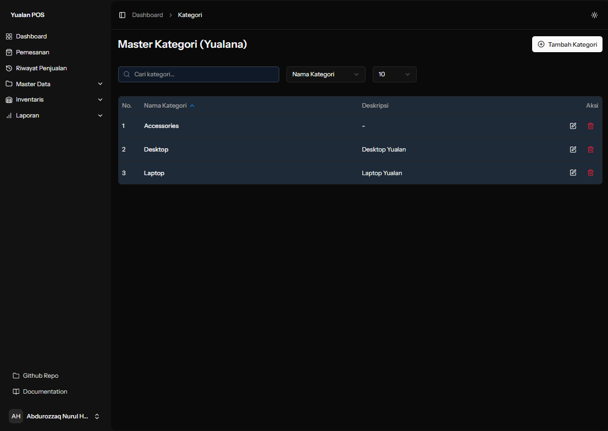
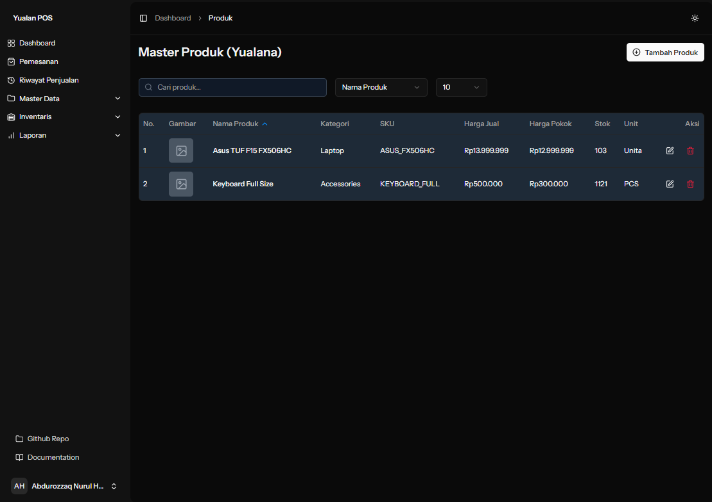
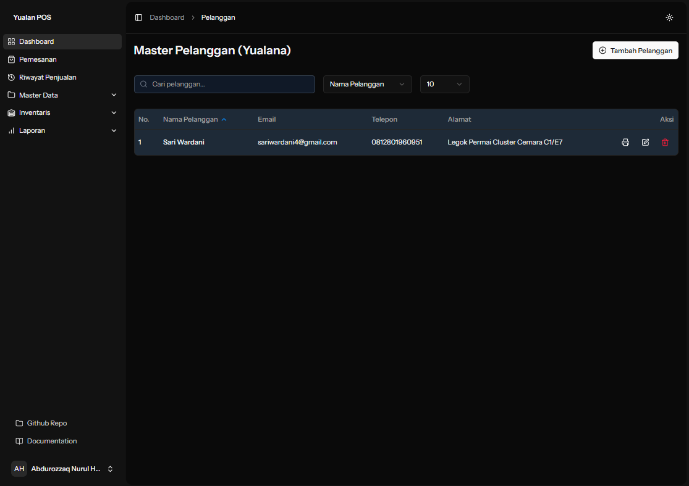
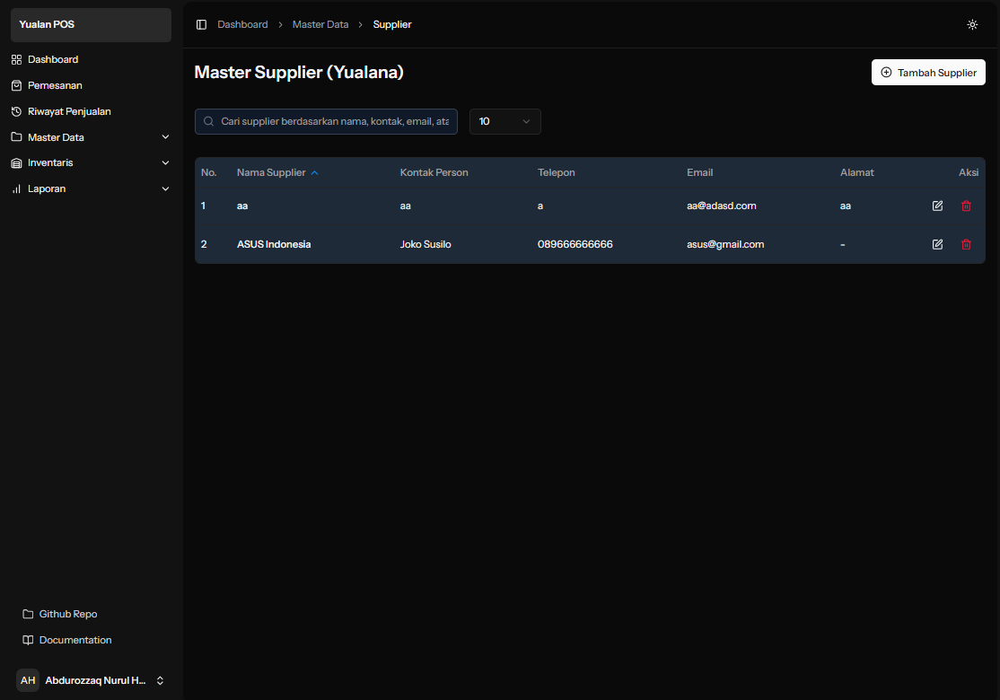

Persiapan Awal Tenant
Untuk penggunaan Yualan POS – fokus pada data master

1. 🗂️ Kategori Produk
Langkah awal yang harus kamu lakukan adalah membuat daftar kategori produk.
Buat nama kategori yang jelas dan mudah dipahami, seperti "Minuman", "Elektronik", "Alat Tulis", dll.
Setiap kategori bisa diberikan deskripsi tambahan jika dibutuhkan.
Pastikan kategori ini dimiliki oleh tenant tertentu (relasi dengan bisnis/toko yang menggunakan Yualan).
Kategori ini akan digunakan untuk mengelompokkan produk dan memudahkan pencarian serta pelaporan.

2. 🛒 Produk
Setelah kategori disiapkan, kamu bisa mulai menginput data produk.
Tentukan nama produk seperti "Air Mineral 600ml", "Printer Canon", dll.
Jika memungkinkan, tambahkan kode SKU agar setiap produk bisa dikenali secara unik.
Masukkan harga jual dan juga harga pokok (cost price) untuk kebutuhan laporan laba rugi.
Cantumkan jumlah stok awal jika sudah tersedia, dan satuan produk (misalnya pcs, liter, kg).
Produk bisa dikaitkan ke kategori yang sudah dibuat sebelumnya.
Tambahkan informasi lain seperti gambar produk (URL atau path file), deskripsi, apakah produk merupakan makanan, serta bahan-bahannya jika relevan.
Jika kamu ingin ada peringatan stok minimum, isikan batas minimum ini juga.

3. 👥 Pelanggan (Customers)
Data pelanggan sangat berguna untuk pencatatan histori transaksi.
Isikan nama pelanggan.
Tambahkan nomor telepon, email, dan alamat jika tersedia.
Data ini bisa diisi di awal atau otomatis tercatat ketika pelanggan bertransaksi nanti.

4. 🧾 Pemasok (Supplier)
Untuk mendukung manajemen pembelian dan inventaris, kamu perlu mendata supplier.
Masukkan nama pemasok (misal: “PT Sumber Makmur”).
Tambahkan kontak utama, nomor telepon, email, dan alamat.
Jika perlu, catat juga informasi atau catatan khusus terkait supplier tersebut.
Semua data supplier ini terhubung ke tenant (bisnis yang menggunakan sistem).